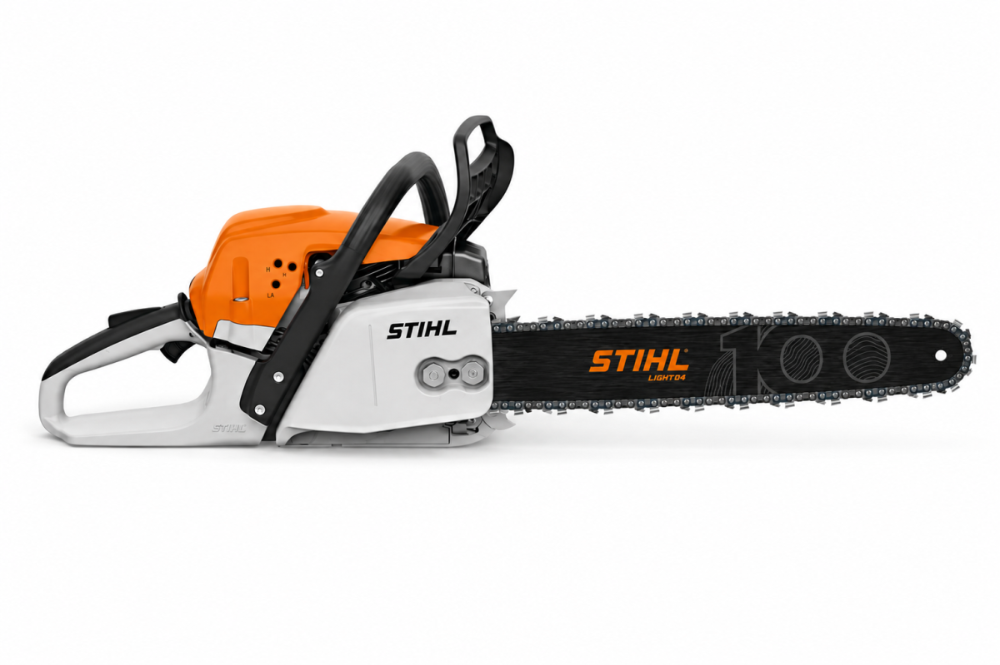

A láncfűrész az egyik leghasznosabb és legsokoldalúbb eszköz a faanyagok feldolgozásában. Legyen szó tűzifa darabolásáról, ágak levágásáról vagy fakitermelésről, a megfelelő láncfűrész gyorsabbá és hatékonyabbá teheti a munkát. A modern láncfűrészek különböző méretben és teljesítménnyel készülnek, így minden feladathoz megtalálható a megfelelő típus. A benzinmotoros, elektromos és akkumulátoros változatok eltérő előnyöket kínálnak. Fontos: a láncfűrész nagy teljesítményű és veszélyes szerszám, ezért használata során mindig be kell tartani a biztonsági előírásokat és megfelelő védőfelszerelést kell viselni.
A láncfűrész fejlődése hosszú utat járt be. A korai láncfűrészek még jelentősen eltértek a ma ismert gépektől, és kezdetben főként speciális szakmai feladatokra használták őket. Az idő múlásával a technológia folyamatosan fejlődött. A motorok egyre erősebbek és megbízhatóbbak lettek, miközben a gépek kezelhetősége és biztonsága is javult. Napjainkban a láncfűrészeket nemcsak a professzionális fakitermelésben, hanem kertészeti és otthoni munkák során is használják.
A láncfűrészek piacán számos ismert gyártó kínál különböző teljesítményű és kialakítású modelleket.
A megfelelő márka és modell kiválasztásakor érdemes figyelembe venni a motor teljesítményét, a vezetőlemez hosszát, a gép tömegét, valamint azt, hogy milyen munkára szeretnénk használni.
